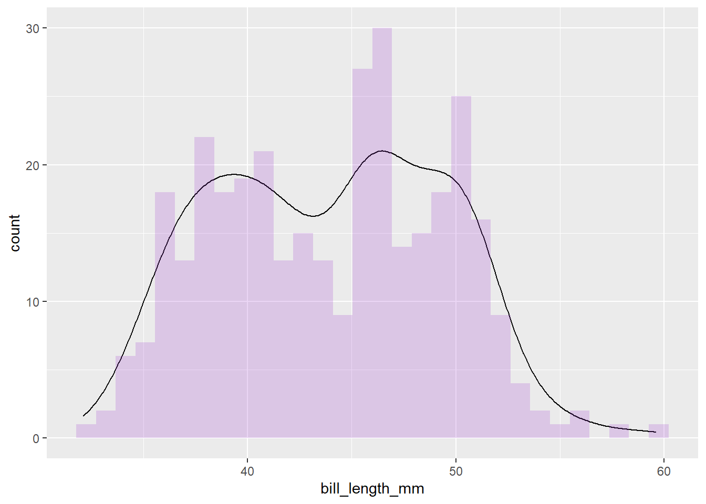
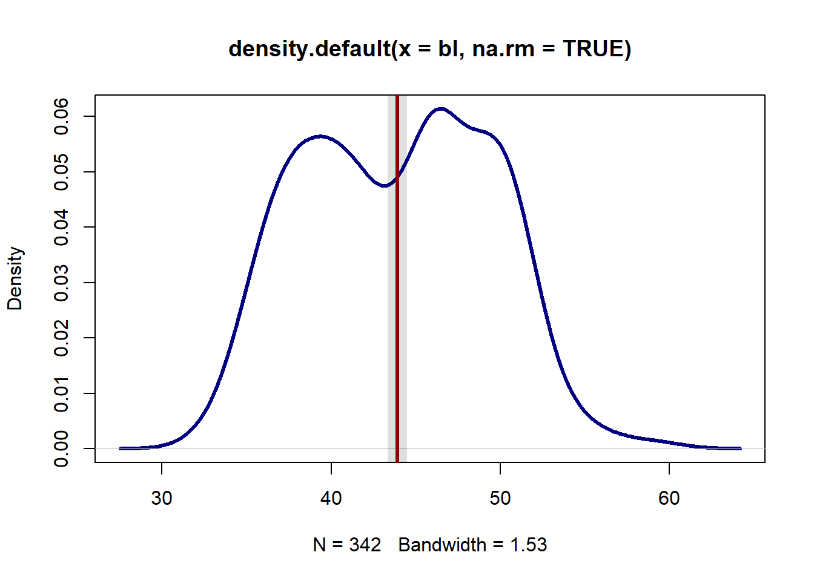

require(tidyverse)
require(magrittr)7 Sample Data in R
We rarely have complete data about something we want to know. For example, we often want to know who will win a political election, but we do not have the time to ask every potential voter who they plan to vote for. And people’s attitudes change during a campaign.
However, it is possible to take get the opinion of a small number of people and make an estimate of the possible outcomes of the election.
That small number of people is called a sample, and the estimate we make about the broader population is called an inference.
Descriptive statistics is the use of statistical techniques to describe data.
Inferential statistics is the use of statistical techniques to make inferences about a complete population based on a sample from that population.
7.1 Types of Sampling
The method used to determine what subset of people or things you base your inference on is called sampling.
There are two broad types of sampling techniques, and a number of subtypes within those broad types.
Probability sampling is when any member of the target population has a known probability of being included in the sampled population. Such techniques include:
Simple random sampling involves randomly selecting members of the population. There is an equal probability that any member of the For example, a random number generator (like the Excel RAND() function) can be used to select a subset of numbers from a phone number list that covers the population. In the natural sciences, an example might be placing remote cameras at random locations in an area when trying to get a count of the population of a specific type of animal in that area
Systematic sampling involves selecting members from the target population at a regular interval. For example, every 10th number from a sorted list of addresses Stratified sampling involves taking random samples from different subgroups of the target population and then using known information about the size or characteristics of those subgroups to adjust the results. For example, if studying the opinions about college students toward a university policy, different classes (freshmen, sophomores, etc) or majors might have different opinions about that policy. Separating calculations into different sub-groups can be useful for discerning the differences between those groups Nonprobability sampling is used in cases where probability sampling is impractical. While you cannot use statistical techniques to make clear inferences about the broader population from these types of samples, descriptive results from these samples can offer suggestions of research paths that would justify the expense and difficulty of further probability sampling. Some common subtypes of nonprobability sampling include:
Convenience sampling involves sampling a group of people you can conveniently access. For example, American college students are some of the most studied populations in history. College students tend to be young and from a specific set of social classes, so they cannot be said to be a random sample of the broader population. However, college students are readily accessible to the academic researchers that are their professors, and they often are happy to be research subjects in exchange for pizza or other relatively small amounts of compensation
Purposive sampling is a variant on convenience sampling that is commonly used when information about a specific subgroup of the broader population is needed. For example, if information about the opinions of men are needed, volunteers might stand on a busy street corner and specifically target only men that pass by for further inquiry (and likely rejection)
Snowball sampling involves asking sampled subjects for recommendations of other people that might fit a specific profile. For example, if studying a relatively small ethnic group, asking a subject for a recommendation on friends and family members that might participate would make it easier to find other members of that ethnic group
7.2 Descriptive Statistics
peng = palmerpenguins::penguins
peng |> glimpse()Rows: 344
Columns: 8
$ species <fct> Adelie, Adelie, Adelie, Adelie, Adelie, Adelie, Adel~
$ island <fct> Torgersen, Torgersen, Torgersen, Torgersen, Torgerse~
$ bill_length_mm <dbl> 39.1, 39.5, 40.3, NA, 36.7, 39.3, 38.9, 39.2, 34.1, ~
$ bill_depth_mm <dbl> 18.7, 17.4, 18.0, NA, 19.3, 20.6, 17.8, 19.6, 18.1, ~
$ flipper_length_mm <int> 181, 186, 195, NA, 193, 190, 181, 195, 193, 190, 186~
$ body_mass_g <int> 3750, 3800, 3250, NA, 3450, 3650, 3625, 4675, 3475, ~
$ sex <fct> male, female, female, NA, female, male, female, male~
$ year <int> 2007, 2007, 2007, 2007, 2007, 2007, 2007, 2007, 2007~The range() of values as well as the mean() and median() are standard descriptive statistics to run on any quantitative variable.
peng %>% pull(bill_length_mm) %>% range(na.rm = TRUE)[1] 32.1 59.6peng %>% pull(bill_length_mm) %>% mean(na.rm = TRUE)[1] 43.92193peng %>% pull(bill_length_mm) %>% median(na.rm = TRUE)[1] 44.45peng %>% pull(bill_length_mm) %>% sd(na.rm = TRUE)[1] 5.459584The distribution of values across the range can be assessed with a histogram and/or density plot.
peng %>%
ggplot(aes(x = bill_length_mm))+
geom_histogram()`stat_bin()` using `bins = 30`. Pick better value with `binwidth`.Warning: Removed 2 rows containing non-finite values (stat_bin).
peng %>%
ggplot(aes(x = bill_length_mm))+
geom_density(aes(y = ..count..))+
geom_histogram(alpha = .2, fill = "darkorchid")Warning: Removed 2 rows containing non-finite values (stat_density).`stat_bin()` using `bins = 30`. Pick better value with `binwidth`.Warning: Removed 2 rows containing non-finite values (stat_bin).
7.3 Categorical Variables
The table() function shows the counts of different values in a categorical variable.
peng %$%
table(species)species
Adelie Chinstrap Gentoo
152 68 124 A table() can also be visualized as a barplot() with values converted to percents
peng %>%
ggplot(aes(x = species)) +
geom_bar()
7.4 Confidence Interval
If we sample a characteristic of a population that can be represented as a continuous variable, we can take the mean of that sample and get the sample mean. But how confident can we be that sample mean is anywhere close to the population mean?
A curious and wondrous fact about random sampling is that if you take a sufficient number of random samples (usually 30 or more) from any kind of distribution (normal or not), the distribution of deviations (errors) between the sampled values and the population mean will be a normal distribution.
This is the central limit theorem, which was originally proposed by French mathemetician Abraham de Moive in 1733 and later developed by French mathemetician Pierre-Simon Laplace in 1812 and Russian mathemetician Aleksandr Lyapunov in 1901.
The implication of the central limit theorem is that you can use a standard deviation and the rules of probability to calculate confidence intervals and assess how reliable your sampling results are. The central limit theorem is one of the most important theorems in statistics.
For example, within a normal distribution:
- We know that around 68% of the values are within one standard deviation of the mean and we know that 99.7% of the values are within two standard deviations of the mean.
- Therefore, we can be 68% certain that our sample mean is within one standard deviation of the population, and 99.7% certain that our sample mean is within two standard deviations of the population.
7.4.1 Standard Error
Since our primary interest is is a potential amount of error between the sample mean and population mean, we can use the standard deviation of the sample and the size of the sample to calculate the standard error. The standard error is used to estimate how far your sampled data may differ from the population data.
Standard error for a sample mean (x) is calculated as the standard deviation of the population (σ) divided by the square root of the sample size. The greater the sample size, the closer the sample mean can be assumed to get to the actual population mean.
\(\sigma \bar x = \frac{\sigma}{\sqrt{n}}\)
Since we rarely know the standard deviation of the population (which is why we’re sampling in the first place) we estimate the standard error using the standard deviation of the sample (s):
\(\sigma \bar x = \frac{S}{\sqrt{n}}\)
7.5 Confidence Intervals For Means
The confidence level you want determines how many standard errors above or below the mean you are willing to accept. The most common confidence levels are 95% and 99% (Investopedia 2022).
In a normal distribution, we know that 95% of the values (2.5 percentile to 97.5 percentile) are within 1.96 standard deviations (a z-score of ±1.96) above or below the mean.
Accordingly, if we have a random sample, we can be 95% confident (confidence interval) that the actual population mean is within 1.96 standard errors above or below the sample mean (s).
\(d\pm1.96\times\sigma\bar x\)
The confidence interval is sometimes described in terms of margin of error.
- The confidence interval is the whole range of values above and below the mean.
- The margin of error is the difference between the mean and the bottom or top of the confidence interval (z-score times standard error).
Using the GPA data in the sample data above, the confidence interval based on standard error can be calculated in R:
bl = peng %>% pull(bill_length_mm)
n = length(bl)
stderr = sd(bl, na.rm = TRUE) / sqrt(n)
moe = round(1.96 * stderr, 2)
print(paste("The margin of error is", moe))[1] "The margin of error is 0.58"bl.mean = round(mean(bl, na.rm = TRUE), 2)
print(paste("The 95% confidence interval is", bl.mean - moe, " to ",bl.mean + moe))[1] "The 95% confidence interval is 43.34 to 44.5"The MOE can be visualized with a semitransparent rect() around the mean line.
plot(density(bl, na.rm = TRUE), lwd=3, col="navy")
rect(xleft = bl.mean - moe, ybottom = -1, xright = bl.mean + moe,
ytop = 1, border=NA, col="#00000020")
abline(v = bl.mean, lwd=3, col="darkred")
7.6 Confidence Intervals for Proportions
If your sample data is dichotomous (e.g. Mac vs PC), or categorical that can be expressed as dichotomous (e.g. people whose favorite fruit is apple), what you are estimating is the population proportion in each group (x% use MAC, y% use PC). In that case, the confidence interval is:
\(p\pm Z \times \sigma_p\)
based on the standard error for proportions:
\(\sigma_p = \sqrt{p \times (1-p)/n}\)
Where:
Z is the z-score for the desired confidence interval (1.96 for a 95% level of confidence) p is the proportion from the sample n is the size of the sample
For example, in a survey of 53 students in regard to their laptop operating system:
prop = peng %>% pull(species) %>% table() %>% prop.table()
stderr = sqrt(prop - (1 - prop)/nrow(peng))
moe = 1.96 * stderr
paste0("Estimated ", names(prop), " species = ",
round(100 * (prop - moe)), "% to ",
round(100 * (prop + moe)), "%")[1] "Estimated Adelie species = -86% to 174%"
[2] "Estimated Chinstrap species = -67% to 106%"
[3] "Estimated Gentoo species = -81% to 153%" 7.7 Confidence Interval for Means
T is used instead of the z-score to calculate a margin of error for sample means or proportions:
\(s \pm t\times \sigma \bar x\)
df = nrow(peng) -1
t = qt(p = 0.95, df = df)
stderr = sd(peng$bill_length_mm, na.rm = TRUE)/sqrt(nrow(peng))
moe = round(t * stderr, 2)
mean.peng = mean(peng$bill_depth_mm, na.rm = TRUE)
paste("Estimated average length is", mean.peng - moe, "to", mean.peng + moe)[1] "Estimated average length is 16.6611695906433 to 17.6411695906433"7.8 Confidence Interval for Proportions
\(p \pm t \times \sigma_p\) p ± t * σp
Using the example above of a survey where 40% of respondendents indicated using a Mac rather than a PC for their home computer or laptop, we can see the wider margin of error for proportions associated with a small sample:
leo = table(peng$species)
leo = leo / sum(leo)
stderr = sqrt(leo * (1 - leo) / nrow(peng))
t = qt(0.95, nrow(peng) - 1)
moe = t * stderr
paste0("Estimated ", names(leo), " users (small sample) = ",
round((leo - moe) * 100, 1), "% - ",
round((leo + moe) * 100, 1), "%")[1] "Estimated Adelie users (small sample) = 39.8% - 48.6%"
[2] "Estimated Chinstrap users (small sample) = 16.2% - 23.3%"
[3] "Estimated Gentoo users (small sample) = 31.8% - 40.3%" 7.9 How Big a Sample Do I Need to Have the Confidence I Want?
Using simple algebra, we can transform the formulas for margin of error to find the sample size (n) that we need get the margin of error (E) that we are able to tolerate:
For population mean estimates: $n = (Z S/ E $
For population proportion estimates:
\(n = Z2 \times p \times (1-p)/ E2\)
Estimating s and p For the mean formula, you need a sample mean (s), and for the proportion formula you need the sample proportion (p). But since you have not yet done the sampling yet, you cannot know these values.
There are three imperfect but practical ways to estimate these values:
- Two-stage sampling design involves doing a preliminary survey to get an estimate of the sample mean (s) or the proportion (p)
- For means or proportions, when available, you can use results from a prior survey or estimate
- For proportions you can use p = 50% as a worst case scenario. This causes the p * (1 - p) part of the formula to be its maximimum possible value so the sample size is the largest possible value
Note that the examples below presume a random sample from the entire population you are basing the estimate upon. If you are trying to make estimates about Americans, your random sample would need to be drawn from a list of all Americans with 100% participation. Drawing a perfectly random sample from anything other than a trivial or captive population is usually impossible, requiring more sophisticated modeling techniques to adjust the results and compensate for segments of the population that were undersampled.
Example Sample Size Following the examples using male height above, suppose you wish to get an estimate for GPA ±0.1 points (E = 0.1) with 95% confidence (Z = 1.96). For s you use the mean from the sample of 3.009143.
Z = 1.96
s = 3.009143
E = 0.1
n = (Z * s / E)^2
paste("Minimum sample size =", ceiling(n))[1] "Minimum sample size = 3479"Following on the proportions example above, suppose you wish to get a better estimate of the percent of students that use Macs as their personal home computers or laptops ±1% (E = 0.01) at a 95% level of confidence (Z = 1.96). Using the estimated proportion of 47% (p = 0.47) from the survey given above:
Z = 1.96
p = 0.47
E = 0.01
n = (Z^2) * p * (1 - p) / (E^2)
paste("Minimum sample size =", ceiling(n))[1] "Minimum sample size = 9570"7.10 Calculations in Excel
7.10.1 Confidence Interval for Means
Using a simulated sample of heights from 100 American men in this CSV file, this formula can be used to calculate standard error:
=STDEV(A2:A101) / SQRT(COUNTA(A2:A101))To calculate margin of error for means given:
- That standard error in cell B2
- The Z-score for a 95% level of confidence (z = 1.96) in cell B3
=B3 * B2 / SQRT(B4)7.10.2 Confidence Interval for Proportions
Using survey responses from this CSV file, we can calculate the confidence interval for proportions in Excel.
When dealing with categorical data in Excel, you can use the COUNTIF() function to find the number of cells in your sample that match a particular value. The first parameter is the data and the second parameter is the condition. Note that the second parameter must be enclosed in quotes.
For example, with the CSV file linke above, the data in cells A2:A33 is either “Mac” or “PC”. This will return the number of Mac users:
=COUNTIF(A2:A33, "Mac")You can then get the proportion (percentage) of yes cells with:
=COUNTIF(A2:A22, "Mac") / COUNTA(A2:A22)If you put your proportion in cell B2 and your sample size in cell B3, the standard error for proportions is:
=SQRT(B2 * (1 - B2) / B3)If you then put the Z-score for your level of confidence in cell B3 (for 95% confidence, this is 1.96), the Excel formula for margin of error for proportions is:
=B4 * SQRT(B2 * (1 - B2) / B3)Z-Scores For Other Levels of Confidence In Excel, z-scores for other levels of confidence can be calculated with the NORMSINV() function. With the confidence interval in cell B2 (as a percent on a scale of 0 to 1):
=NORMSINV(1 - ((1 - B2) / 2))Confidence Interval for Small Samples In Excel, the TINV() function can be used to calculate t for use with standard error to calculate a confidence interval.
To calculate the margin of error for means given:
A level of confidence in cell B2 The standard deviation in cell B3 The sample size in cell B4
=TINV(1 - B2, B4 - 1) * B3 / SQRT(B4)To calculate the margin of error for proportions:
=TINV(1 - B3, B4 - 1) * SQRT(B2 * (1 - B2) / B4)```
Excel Confidence Interval Functions
As you might expect, Excel has functions to simplify confidence intervals for means. CONFIDENCE.NORM() can be used to calculate margin of error with sample sizes over 30 and CONFIDENCE.T can be used with sample sizes of 30 or less. Both take the same parameters:=CONFIDENCE.NORM(alpha, stdev, sample_size)=CONFIDENCE.T(alpha, stdev, sample_size)alpha = 1 minus level of confidence (0.05 for 95% confidence level) stdev = standard deviation of the sample sample_size = count of values in the sample For example, given a level of confidence in cell B2, the standard deviation in cell B3, and the sample size in cell B4, the margin of error (for a sample size less than 30) using the t-distribution function:
=CONFIDENCE.T(1 - B2, B3, B4)Excel does not have a convenience function for confidence interval for proportions.
Example Sample Size Estimation Following the examples using male height above, suppose you wish to get an estimate for female height ±1 inch (E = 1) with 95% confidence (Z = 1.96). For s you use a value you have seen on the internet of 63.7 inches. The power() function is used for the exponent:
=POWER(1.96 * 63.7 / 1, 2)Following on the proportions example above, suppose you wish to get a better estimate of the percent of Americans that use Macs as their personal home computers or laptops &plusmin;5% at a 95% level of confidence (Z = 1.6). Using the small sample estimated mean of 40% given above:
=POWER(1.96, 2) * 0.4 * (1 - 0.4) / POWER(0.05, 2)